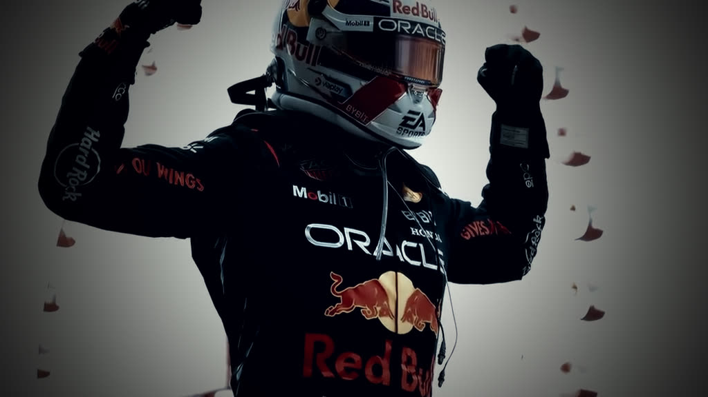

01 / THE ARRIVAL
FIRST RACE.
BARCELONA, SPAIN / 15 MAY
FIRST RACE.
FIRST STATEMENT.
Eighteen years old. A new team. And a victory on his Red Bull debut. The youngest Grand Prix winner the sport had ever seen.
Read the race story ↗